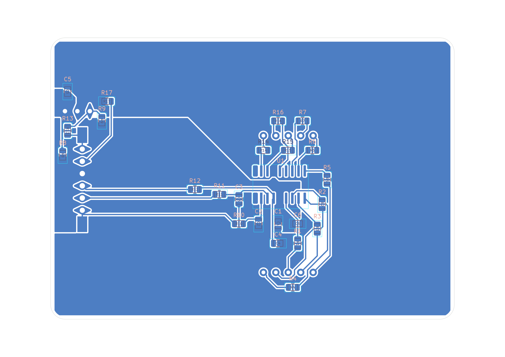
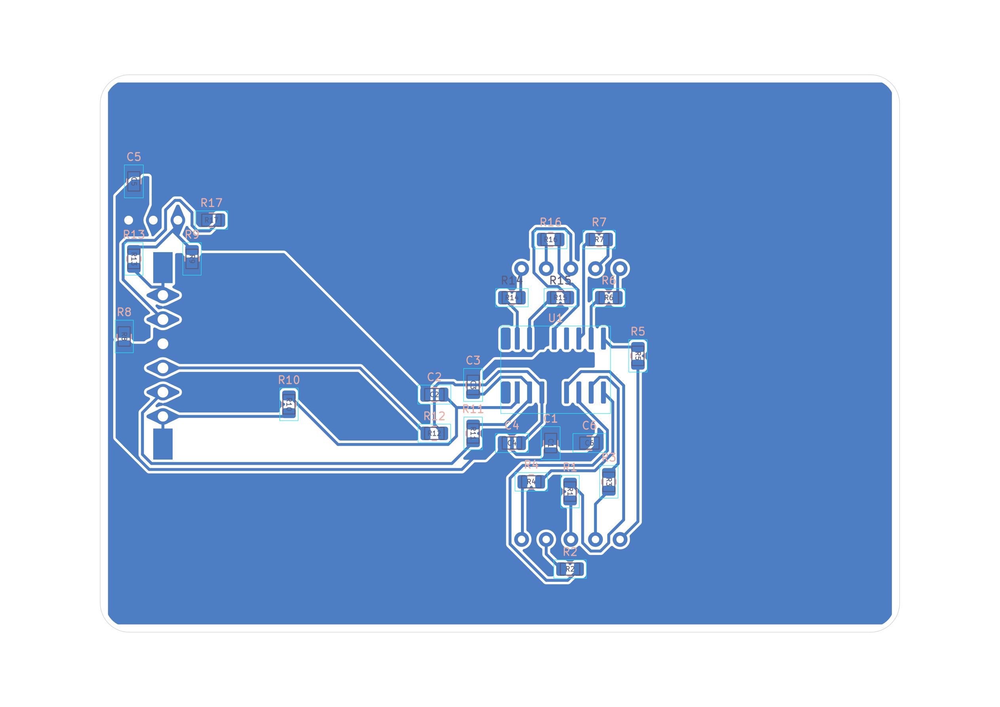
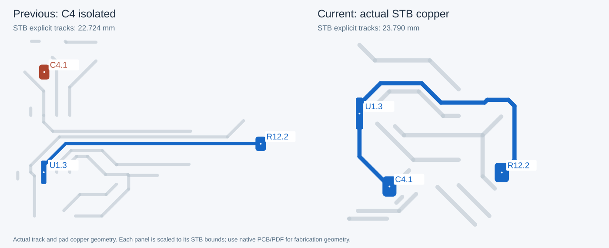
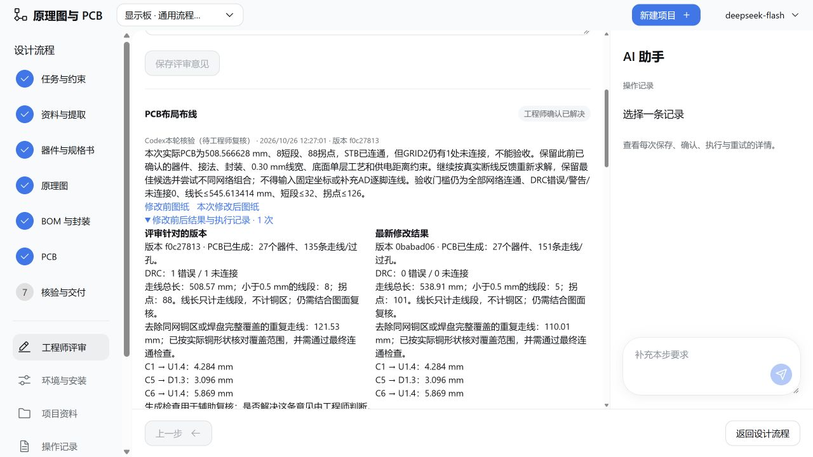

C4所在STB网络：2 → 1 个实际连通分支。走线 598.7 → 538.9 mm；短段 34 → 5；拐点 133 → 101。本轮没有改变阻容或接法，AD电气差异仍未消除。
原版与本轮实际图纸


C4 所在 STB 网络：实际铜线与焊盘铜

实际文件验收，不以DRC代替质量
| 项目 | 原版 | 上轮未连接版 | 本轮 |
|---|---|---|---|
| 实际线宽 / mm | 0.254 | 0.30 | 0.30 |
| 显式走线总长 / mm | 545.613 | 598.668 | 538.908 |
| STB显式走线 / mm | 25.995 | 22.724 | 23.790 |
| 走线段数 | 177 | 189 | 151 |
| 短于0.5 mm的线段 | 32 | 34 | 5 |
| 二度连接拐点 | 126 | 133 | 101 |
| STB实际连通分支 | 1 | 2 | 1 |
| DRC错误 / 警告 / 未连接 | 0 / 0 / 0 | 1 / 0 / 1 | 0 / 0 / 0 |
| 器件 / 物理焊盘 | 27 / 94 | 27 / 94 | 27 / 94 |
独立遍历了 29 个非铺铜、多焊盘信号网。STB的C4.1、U1.3、R12.2实际分支：C4.1、R12.2、U1.3。全部焊盘接网、封装、器件值、装配面和供电距离条件保持。
原始路由线长 648.920 mm；清除被真实铜区完整覆盖的 101.260 mm、被焊盘完整覆盖的 8.752 mm。显式线长不计面状铜，不能等同于实际电流路径改善幅度。
评审原话、整改和复核结论
意见 1 · 仍需修改（已留档）
当前显示板的默认PCB走线宽度为0.254 mm，请调整到0.30 mm，作为本轮工艺微调目标，间距继续不小于0.254 mm；本条不改变电气性能的未确定结论。保持已确认的器件数量、器件值、接法、NC和准确封装。继续执行底面贴片、顶面插装、仅底层布线、无过孔、保留已有8个零欧跨线和电源/返回铜区。局部去耦距离仍须不超过5 mm，储能距离不超过10 mm。根据当前网络和真实封装自动布局布线，避免无必要绕行和折线；不要输入或读取参考板固定坐标，不补逐脚连线。请以本轮实际生成的PCB核对线宽、网络、去耦距离、DRC，并比较总线长和图面；不以模型回复代替已落实的证据。
本轮复测评审（Codex依据用户要求拟定） · 2 次执行 · 1 条复核决定
本次实测0.30 mm线宽已落实，器件、接法、封装、去耦距离和DRC保持，但总线长从545.6增至637.3 mm，短于0.5 mm的小线段从32增至136，14个器件发生重排，因此仍需修改。保持0.30 mm线宽和原评审的工艺、电气不变要求，优先沿用本组评审初始生成版本的排布顺序与功能分组意图，重新自动布局布线，减少无必要整体重排、绕行和零碎线段。目标是线长与短段数量接近或优于原版；若加宽导致必要变化须用实际图纸解释。不得读取参考AD坐标、输入生成坐标或补逐脚连线。该意见为Codex按用户要求进行的复测，仍待工程师最终评审。
意见 2 · 仍需修改（已留档）
本次实测0.30 mm线宽已落实，器件、接法、封装、去耦距离和DRC保持，但总线长从545.6增至637.3 mm，短于0.5 mm的小线段从32增至136，14个器件发生重排，因此仍需修改。保持0.30 mm线宽和原评审的工艺、电气不变要求，优先沿用本组评审初始生成版本的排布顺序与功能分组意图，重新自动布局布线，减少无必要整体重排、绕行和零碎线段。目标是线长与短段数量接近或优于原版；若加宽导致必要变化须用实际图纸解释。不得读取参考AD坐标、输入生成坐标或补逐脚连线。该意见为Codex按用户要求进行的复测，仍待工程师最终评审。
Codex本轮核验（待工程师复核） · 1 次执行 · 1 条复核决定
最新实际PCB线宽0.30 mm、器件与网络保持，线长598.7 mm、短段34，较退步候选改善；但C4所在STB网络仍有1处未连接，不能验收。请在既有装配面、底层布线、无过孔、零欧跨线、铜区及5/10 mm供电距离约束内继续自动布局布线，解决未连接并减少绕行。保留原版排布意图，允许根据可布线性调整；不得输入固定坐标或补完整逐脚连线。根据实际PCB、DRC和线长复核，不以模型承诺关闭意见。
意见 3 · 仍需修改（已留档）
最新实际PCB线宽0.30 mm、器件与网络保持，线长598.7 mm、短段34，较退步候选改善；但C4所在STB网络仍有1处未连接，不能验收。请在既有装配面、底层布线、无过孔、零欧跨线、铜区及5/10 mm供电距离约束内继续自动布局布线，解决未连接并减少绕行。保留原版排布意图，允许根据可布线性调整；不得输入固定坐标或补完整逐脚连线。根据实际PCB、DRC和线长复核，不以模型承诺关闭意见。
Codex本轮核验（待工程师复核） · 1 次执行 · 1 条复核决定
本轮实际PCB已经消除未连接，显式线长506.235926 mm、短段24，但137个拐点仍高于原版126个，未通过约定的布线质量验收。请保留已确认的电气连接、元件值、封装、0.30 mm线宽、单层底部布线和供电距离约束，继续用通用布局布线及真实铜几何清理减少绕线与焊盘内重复碎线。目标仍为零未连接/零DRC错误和警告，线长不超过545.613414 mm、短段不超过32、拐点不超过126；不输入固定坐标或补逐脚连线。记录清理前后的实际长度，不把重复铜线删除误称为信号实际路径缩短。
意见 4 · 仍需修改（已留档）
本轮实际PCB已经消除未连接，显式线长506.235926 mm、短段24，但137个拐点仍高于原版126个，未通过约定的布线质量验收。请保留已确认的电气连接、元件值、封装、0.30 mm线宽、单层底部布线和供电距离约束，继续用通用布局布线及真实铜几何清理减少绕线与焊盘内重复碎线。目标仍为零未连接/零DRC错误和警告，线长不超过545.613414 mm、短段不超过32、拐点不超过126；不输入固定坐标或补逐脚连线。记录清理前后的实际长度，不把重复铜线删除误称为信号实际路径缩短。
Codex本轮核验（待工程师复核） · 1 次执行 · 1 条复核决定
本次实际PCB为508.566628 mm、8短段、88拐点，STB已连通，但GRID2仍有1处未连接，不能验收。保留此前已确认的器件、接法、封装、0.30 mm线宽、底面单层工艺和供电距离约束。继续按真实断线反馈重新求解，保留最佳候选并尝试不同网络组合；不得输入固定坐标或补充AD逐脚连线。验收门槛仍为全部网络连通、DRC错误/警告/未连接0、线长≤545.613414 mm、短段≤32、拐点≤126。
意见 5 · 本条已复核；非生产签核
本次实际PCB为508.566628 mm、8短段、88拐点，STB已连通，但GRID2仍有1处未连接，不能验收。保留此前已确认的器件、接法、封装、0.30 mm线宽、底面单层工艺和供电距离约束。继续按真实断线反馈重新求解，保留最佳候选并尝试不同网络组合；不得输入固定坐标或补充AD逐脚连线。验收门槛仍为全部网络连通、DRC错误/警告/未连接0、线长≤545.613414 mm、短段≤32、拐点≤126。
Codex本轮核验（待工程师复核） · 1 次执行 · 1 条复核决定
已从实际PCB复核：C4.1/U1.3/R12.2处于同一STB铜分支，29个非铺铜多焊盘信号网均连通；原生DRC错误/警告/未连接/网表差异均0。显式走线538.908369 mm、短段5、拐点101，均满足原版门槛；94物理焊盘网络、器件值、准确封装、装配面、0.30 mm线宽及5/5/10 mm供电距离保持，未输入固定坐标或AD逐脚线表。已经查看实际前后PCB图。原始路由648.919918 mm中清理了101.259872 mm铜区覆盖及8.751677 mm焊盘覆盖的重复线段；不是把相同幅度当作信号实际路径缩短。按用户要求，本条连通及布线质量目标已落实；电气参数与AD差异仍未消除，尚待实际工程师、制造及实物签核。
这份记录由Codex按用户要求拟定和核验，署名不代表工程师身份认证。生产签核未完成。

改的是通用能力
接口滤波器归属由器件角色、唯一接收端和真实返回网络推导；多接收端不擅自猜测。铺铜网络不再按虚拟交叉阻碍布局。重复线段只有在同网同层的填铜或焊盘完整覆盖其真实铜形时才删除。未输入AD坐标，未补完整AD逐脚连接。
与AD仍有哪些差异
器件27/29，逻辑引脚81/85；段电阻330Ω/47Ω，红外100Ω与10kΩ/220Ω与22kΩ，主电源及红外电容组合仍不同。没有补充工作指标，就不为对齐数值猜测结论。逐项比较与未确定项。
工程师如何使用
生成需要Harness、配置的模型、KiCad完整程序与库及配套Python依赖、Java21；Freerouting随插件提供。没有KiCad可直接查看Demo/PDF，或在已有插件项目使用ReviewOnly记录意见；补齐工具后才能重新生成。GitHub TGZ和本Demo不包含CAD安装器、Java或离线Python依赖。安装与评审流程。